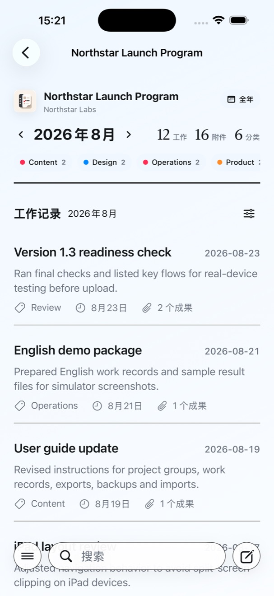
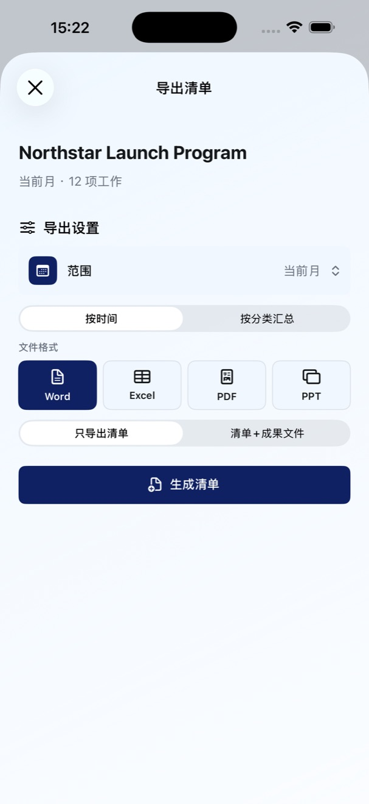
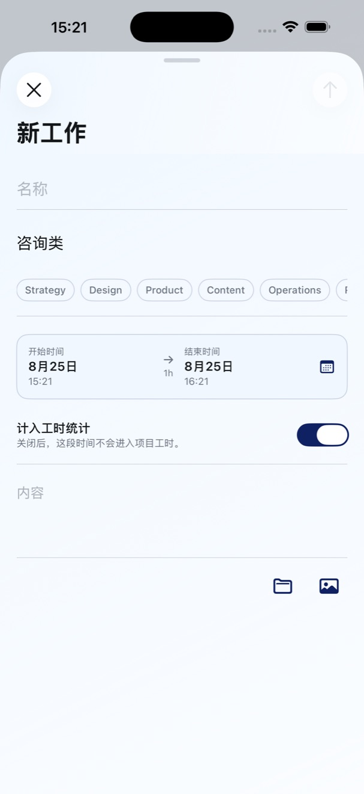
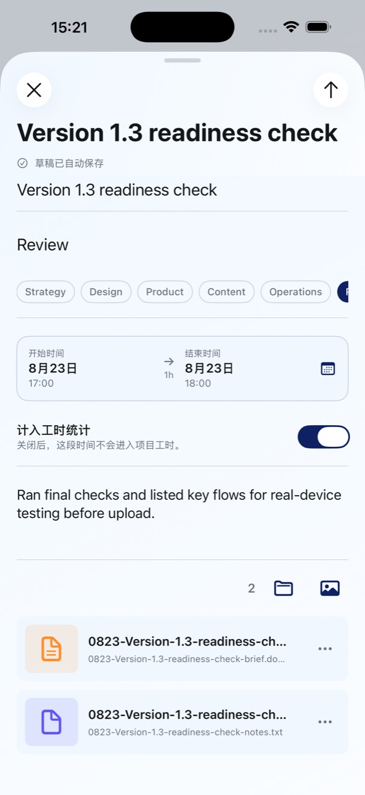

记忆是会过期的
月底才回想这个月做了什么，小事容易遗漏，重要价值也容易被低估。
WORKLIST 1.5 · 工作成果记录工具
工作不该只留在记忆里。WorkList 把项目、记录和成果放在一起，需要时直接生成专业工作报告。


TodoList 计划要做什么。
WorkList 记录你真正做成了什么。
月底才回想这个月做了什么，小事容易遗漏，重要价值也容易被低估。
文件在文件夹，图片在手机，过程在微信。要交付时，又要到处翻找。
工作已经做完，写日报、月报、述职时却还要重新梳理一遍。
按项目、类别和起止时间记录，草稿自动保存。
文件与图片归到对应工作，支持命名、预览和分享。
Word、Excel、PDF、PPT，一份记录，多种交付。


以下内容以用户反馈的形式展示产品价值，人物与表述为场景化创作，不代表真实用户评价或效果承诺。
以前写月报，先要花很久翻微信和文件夹。现在每次做完随手记下，月底打开 WorkList，导出就是一份完整的工作底稿。
项目经理多项目并行 · 月度汇报
“客户突然问某个阶段交付了什么，以前要逐个文件找。现在打开项目组，工作和成果就在一起。”
咨询顾问 · 成果交付
“最有用的不是又多了一个待办工具，而是方案、修改稿和最终文件终于能对应到具体工作。”
设计师 · 版本与成果归档
“述职时才发现，我不是没有成果，只是它们之前没有被系统地留下来。WorkList 让这些努力变得可见。”
自由职业者 · 述职与复盘